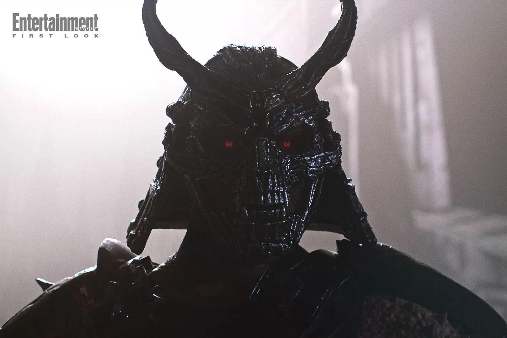
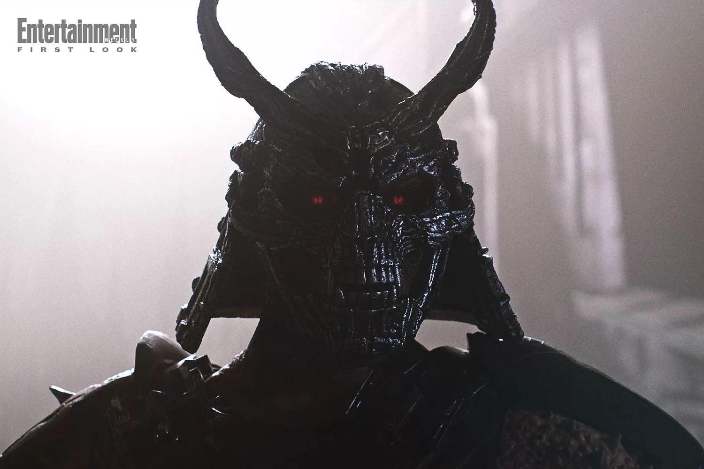

La suite tant attendue du film Mortal Kombat débarque en octobre 2025, et avec elle un personnage iconique : Johnny Cage, incarné par Karl Urban. Après un premier volet riche en action, ce second film nous plonge encore plus dans l’univers chaotique du tournoi Mortal Kombat et de ses champions.
Johnny Cage, l'outsider hollywoodien
Dans le premier film, Johnny Cage n’était qu’évoqué à travers un poster pour son film fictif Citizen Cage. Mais dans Mortal Kombat 2, Johnny prend enfin vie à l’écran grâce à Karl Urban. Selon Ed Boon, co-créateur de la franchise, cette version du personnage est unique, apportant une touche de fraîcheur tout en restant fidèle à l’esprit du jeu :
“Johnny Cage est un ancien acteur de Hollywood, jeté dans ce monde magique et ultra-violent. Karl a apporté une touche personnelle au personnage qui le rend vraiment intéressant.”
Des nouveaux venus et des retours cultes
Aux côtés de Johnny, plusieurs autres personnages de la saga font leur retour, tels que Scorpion (Hiroyuki Sanada), Liu Kang (Ludi Lin), Sonya Blade (Jessica McNamee), et Sub-Zero (Joe Taslim). Mais ce n’est pas tout : Kitana (Adeline Rudolph), Shao Kahn (Martyn Ford) et Quan Chi (Damon Herriman) rejoignent également la lutte. Ces nouveaux venus, dont certains sont des figures adorées des jeux vidéo, promettent de nombreux rebondissements pour les fans.
 

Le tournoi et les enjeux de Mortal Kombat 2
Dans ce second film, le tournoi Mortal Kombat devient officiel, et les enjeux sont plus grands que jamais : si l’Earthrealm perd une dixième fois consécutive contre l’Outworld, Shao Kahn envahira la Terre. Cette confrontation épique, avec des combats visuellement impressionnants, est un élément central du film. Ed Boon ajoute :
“Nous avons intégré un tableau de score visuel tout au long du film pour que le public puisse suivre l’avancée du tournoi. Chaque combat compte et il y a de nombreux rebondissements qui surprendront les spectateurs.”
Une expérience cinématographique unique
Le film sera également projeté en IMAX, ce qui permettra de vivre une expérience visuelle encore plus immersive. Le réalisateur Simon McQuoid a évoqué l’utilisation des formats d’image pour maximiser l’intensité de certaines scènes et offrir un spectacle grandiose. Le film promet ainsi une aventure cinématographique spectaculaire, avec une action toujours plus intense et des personnages plus profonds.
➡️ À lire aussi : Marvel victime d'une fuite massive : Avengers Secret Wars, Doomsday, et bien plus encore !